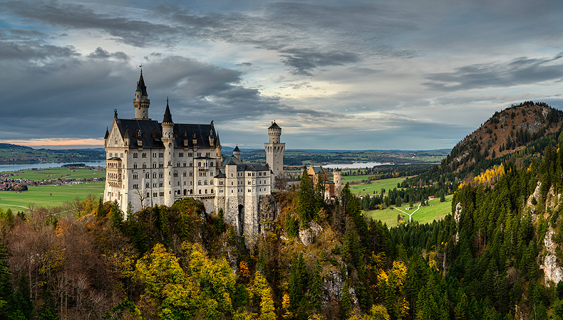
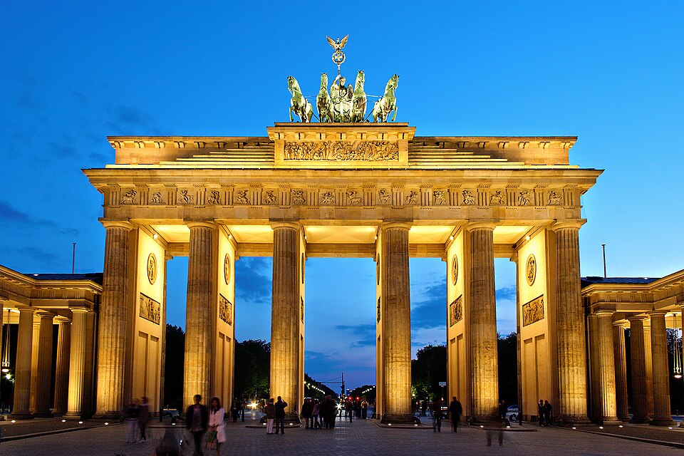
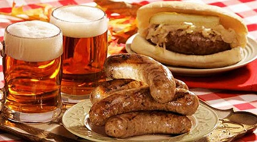

I would take a vacation to Germany because it offers a mix of historic landmarks, beautiful scenery, and exciting cities. I would visit Neuschwanstein Castle, the Brandenburg Gate, and explore the Black Forest.

Image Source: Neuschwanstein Castle Official Site. (n.d.). https://www.neuschwanstein.de
In Germany, I would take a cruise along the Rhine River, explore Berlin’s history, and hike through the Black Forest. I would also visit Munich and experience local festivals like Oktoberfest.

Image Source: Wikipedia. (n.d.). Brandenburg Gate. https://en.wikipedia.org/wiki/Brandenburg_Gate
I would eat traditional German foods such as bratwurst, schnitzel, pretzels, and Black Forest cake. I would also try German beer and regional drinks.

Image Source: German Culture. (n.d.). https://germanculture.com.ua
Some of the top experiences I would want on this trip include: